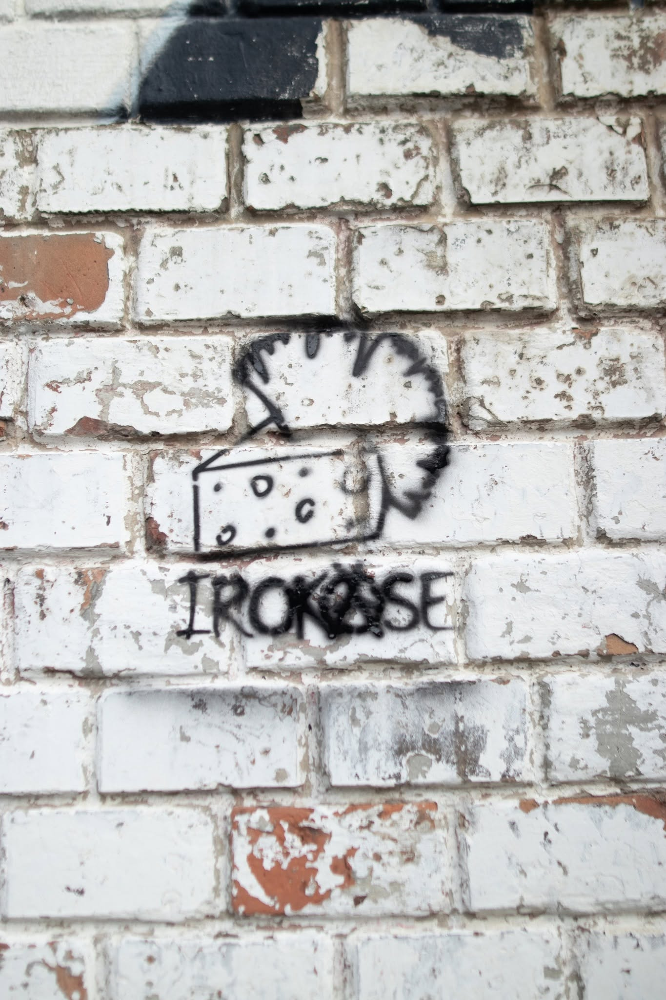

Review
IROKÄSE - Macht kaputt

Melodisch.
Glasklar.
Zum Verlieben.
...
Ähm.
Nö.
Wer darauf wartet, ist bei IROKÄSE ungefähr so gut aufgehoben wie ein Opernfan auf einem Abrisskonzert, bei dem vorher jemand die Notausgänge mit Bierkästen zugestellt hat.
Mir hat schon der Titeltrack gereicht.
"Macht kaputt".
Mehr brauchte ich gar nicht, um zu wissen, in welche Ecke der Käse hier fliegt.
Und ja:
Natürlich steht da dieser Satz im Raum.
Ihr wisst schon welcher.
"Macht kaputt, was euch kaputt macht."
Da muss man gar nicht so tun, als hätte IROKÄSE gerade eine völlig neue philosophische Sprengladung unter den Punkrock gelegt.
Haben sie nicht.
Müssen sie auch nicht.
Manche Parolen sind wie alte Aufkleber auf Laternenpfählen.
Ausgeblichen.
An den Ecken hochgewellt.
Schon tausendmal gesehen.
Und trotzdem bleibt man kurz stehen, weil man sich daran erinnert, wann man diesen Satz zum ersten Mal irgendwo gelesen, gebrüllt oder auf eine viel zu schlecht kopierte Demo-Kassette gekritzelt hat.
Genau in diese Kerbe hauen IROKÄSE.
Nicht elegant.
Nicht neu.
Nicht mit einem Masterplan aus der Musikhochschule.
Eher so, als hätte jemand alte Punk-Parolen aus dem Keller geholt, den Staub runtergepustet, einen Käse-Iro draufgesetzt und gesagt:
"Reicht. Abfahrt."
Und ganz ehrlich:
Mehr muss das hier auch nicht können.
Der Song fährt nicht auf Zehenspitzen in den Raum.
Er kommt rein, stellt sich breitbeinig hin und fragt gar nicht erst, ob die Anlage schon warm ist.
Das ist keine ausgeklügelte Gesellschaftsanalyse.
Keine fein sortierte Diskussionsgrundlage.
Keine musikalische Doktorarbeit über Widerstandsästhetik im deutschsprachigen Kellerpunk.
Zum Glück.
"Macht kaputt" ist eher dieser kleine dreckige Erinnerungszettel daran, dass Punk manchmal gar nicht viel erklären muss.
Drei Minuten.
Eine Ansage.
Ein bisschen Rotz.
Ein bisschen alte Wut.
Ein Refrain, den man wahrscheinlich schon beim zweiten Durchlauf mitbrüllt, obwohl man sich vorher noch vorgenommen hatte, heute mal erwachsen zu bleiben.
Schlechter Plan.
Erwachsen sein kann man später wieder.
Vielleicht.
Was ich an der Nummer mag, ist genau dieses Unverschämte:
IROKÄSE nehmen keine Rücksicht darauf, ob der Satz schon Patina angesetzt hat.
Sie stellen ihn einfach wieder hin.
Nicht als Museumsvitrine.
Nicht als ehrfürchtige Punk-Gedenkminute.
Sondern als brüllbaren Kurzschluss.
Das Album erscheint übrigens am 25.07.2026.
Also gut zwei Wochen nach dem Rollout.
Echt keine Profis.
Oder vielleicht genau deshalb sympathisch.
Wenn ich mit diesem Kacktext hier fertig bin, höre ich mir jetzt wohl doch noch den Rest der Platte an.
Nicht, weil ich klüger werden möchte.
Sondern weil ich wissen will, wie viel Käse noch im Iro steckt.
Mehr Käse gibt es bei IROKÄSE auf Bandcamp.